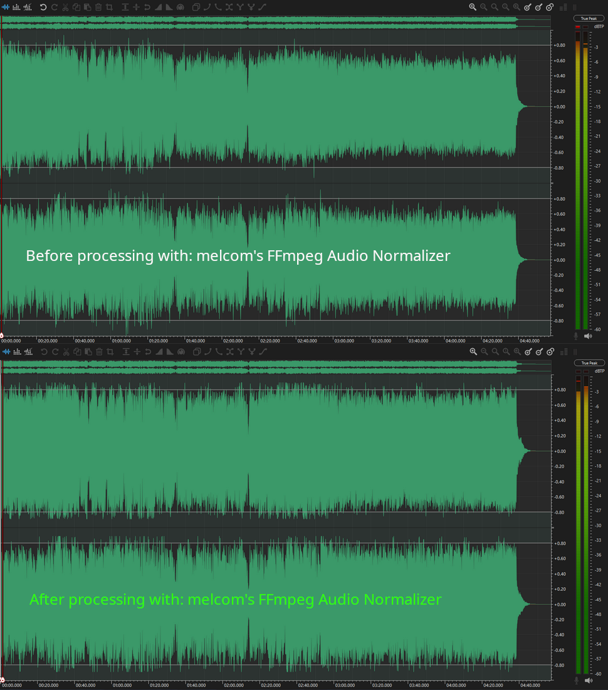
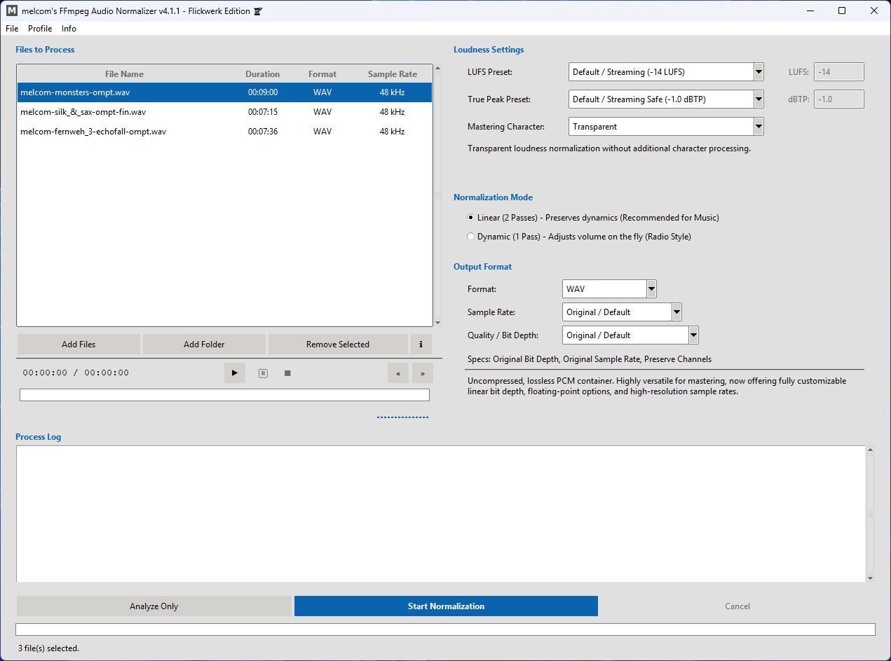
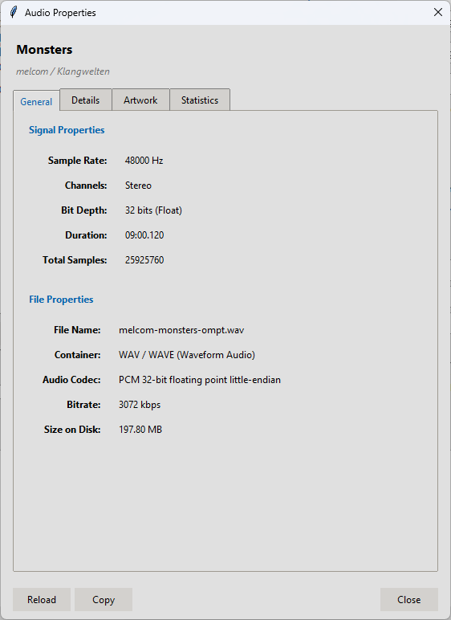
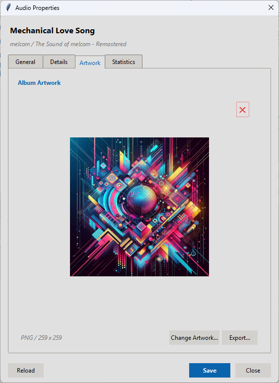
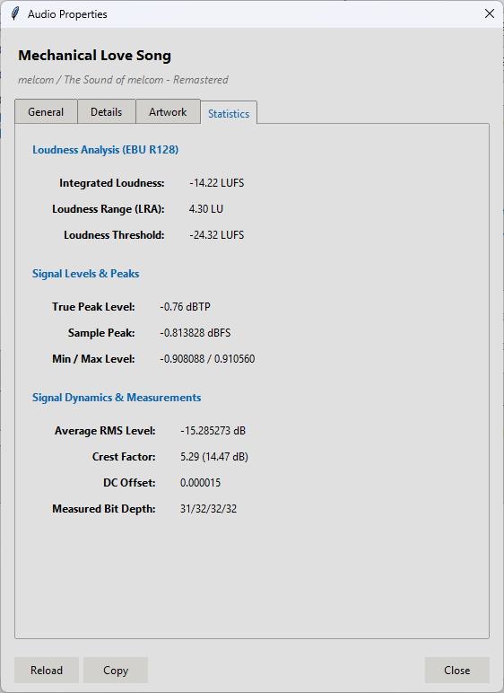

🎨 My Creations
🛠️ Tools, Coding & Creative Projects
Dive into melcom's world of music production! Discover my exclusive self-created samples, essential production tools, and favorite VST plugins that enhance my music crafting process.
🔗 melcom's FFmpeg Audio Normalizer v4.1.1 (Flickwerk Edition)
melcom's FFmpeg Audio Normalizer is a free Windows application for loudness normalization based on EBU R128, LUFS and True Peak processing. Powered by FFmpeg, it supports WAV, MP3, FLAC, M4A, OGG and other common audio formats for individual files and complete batches.
The Flickwerk Edition focuses on careful repairs, safer configuration handling, reliable metadata preservation and a smoother daily workflow. It also introduces optional update notifications, external JSON themes and a completely redesigned Options window.
The application is available in English, German, Polish and Swedish, with dedicated help files for every included language. Questions or issues? Contact me.
📌 Note: The complete FFmpeg suite is required. Download it from this page and select the folder containing ffmpeg.exe, ffplay.exe and ffprobe.exe in the program's Options.
Overview

Before and after normalization

Main Application Window
Audio Properties

Audio Properties

Metadata Editor

Artwork Manager

Audio Properties

Export Controls
What's new in v4.1.1 (Flickwerk Edition)?
- Optional Update Notifications with automatic startup checks, manual checks and optional pre-release detection
- Redesigned Options Window with a clearer layout for appearance, FFmpeg, logging and update settings
- External JSON Themes that make custom themes possible without editing Python source files
- Safer Configuration Handling for malformed, incomplete, unreadable or invalid
options.inivalues - Reliable Metadata and Artwork Preservation through explicit FFmpeg stream and metadata mapping
- Improved Audio Properties with metadata editing, artwork management and detailed EBU R128 statistics
- Advanced Export Controls for sample rate, bit depth, bitrate and format-specific quality
- Integrated Audio Player with seeking, pause and resume support, equalizer and timeline display
- Native Drag and Drop for files, folders and nested directories
- Four Reviewed Languages with updated audio terminology and dedicated help files
Flickwerk Edition brings the existing tools together with a strong focus on stability, clarity and the small details that make everyday audio work more reliable.
For a full list of changes, see the included CHANGELOG.md.
💾 Older Versions
Download v4.1.0 Hotfix (Kontrollraum Edition): scene.org / GitHub / dropbox.com
Download v4.0.3 (Läderlappen Edition): scene.org / GitHub / dropbox.com
Download v3.2.0: scene.org / GitHub / dropbox.com
Download v3.1.0: scene.org / GitHub / dropbox.com
Download v3.0.1: scene.org / GitHub / dropbox.com
Download v3.0.0: scene.org / GitHub / dropbox.com
Download v2.2.2: scene.org / GitHub / dropbox.com
Download v2.2.1: scene.org / GitHub / dropbox.com
Download v2.2.0: scene.org / GitHub / dropbox.com
🔗 My Self Created Samples
Here you can find my self-created samples. All samples are available in .flac format. These samples can be used without any problems, for example in OpenMPT. However, if you want to use these samples in Schism Tracker, you will need to convert them to the .wav format.
To convert the samples, you will need FLAC. You can create a batch file to use the Flac.exe, or you can use Flac Frontend. I can also provide you with my batch file. Please write to me if you would like to have it.
💾 The samples are in my Dropbox account:
There are currently over 200 .flac samples available. All files are in their original length. You can do whatever you want with the samples / instruments 🙂 But maybe you could give me credits 🤗 But it's not really necessary.
Have fun,
- melcom
🔗 GOG Galaxy 2.1+ (64-bit) Community Integrations
I maintain a collection of community integrations updated for the native 64-bit version of GOG Galaxy 2.1+. The goal is to keep existing integrations compatible with the modern client by updating dependencies, replacing outdated libraries and ensuring long-term maintainability.
The repository currently includes released integrations for Amazon Games, Battle.net, EA App, Humble Bundle, itch.io, Steam and Ubisoft Connect, with additional integrations under development. It also references compatible community work maintained by other developers where appropriate.
Integration Overview

Community Integration Status

GOG Galaxy 2.1 Integration Settings
🔗 🔧 melcom's GhostKey Sentinel v1.1
melcom's GhostKey Sentinel is a free, lightweight AutoHotkey script designed to fix mechanical keyboard chattering-the frustrating issue where a single key press registers multiple times.
This "set it and forget it" tool runs silently in the background, intercepting unwanted "ghost" key presses without adding any input lag. It's the perfect solution to restore a flawless typing experience on keyboards that have started to show their age.
📌 Note: Requires the free AutoHotkey v2 software to be installed on your system.
What's new in v1.1?
- Bug Fix: Fixed a conflict with the Steam Overlay. The script now ignores the
Tabkey to ensure theShift + Tabshortcut works reliably in all applications and games.
Key Features
- Solves frustrating double-typing issues (key chattering).
- Runs silently in the background with minimal resource usage.
- Adds no noticeable input lag to your typing.
- Easy "set it and forget it" installation.
- Fully open-source and customizable.
💾 Older Versions
Download v1.0: GitHub
🔗 🖍️ Highlighter with X - Tampermonkey Script (v1.3.0)
Highlighter with X is a compact userscript that lets you highlight any text on any webpage in yellow, green, or red, and remove the highlight instantly with a hover-activated "×" button.
It's perfect for marking up patch notes, articles, or forum posts. The script also automatically saves your highlights and restores them when you revisit the page.
- Custom colors for green & red
- Black text for maximum readability in dark mode
- Hover-X with white border and larger click area
- Keyboard shortcuts:
ALT+1/ALT+2/ALT+3to highlight,ALT+0to remove - Auto-saves highlights and restores them later
⚙️ Requires the free Tampermonkey browser extension to run.